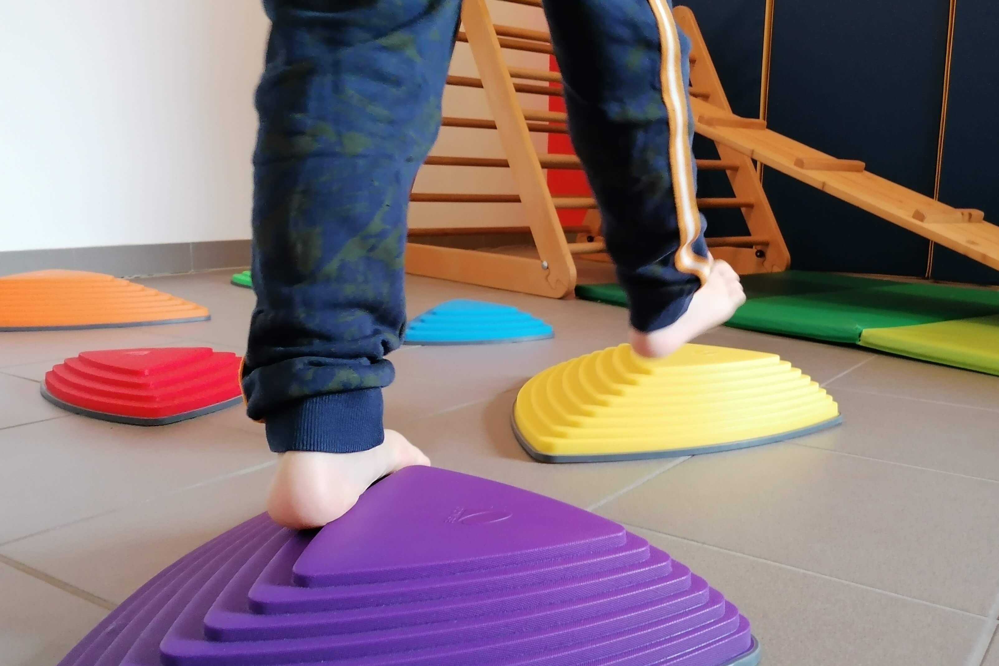
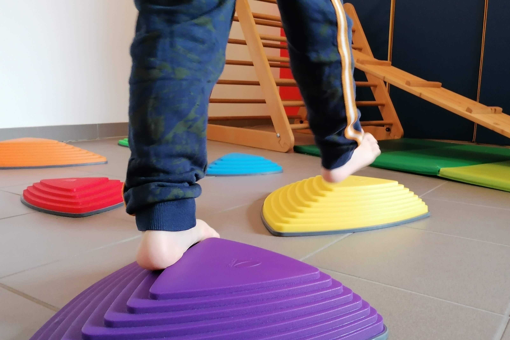

Seit 2015 biete ich Ergotherapie in meiner Praxis in Neuhofen und in Form von Hausbesuchen an.
Nach meinem Studium an der Akademie für Ergotherapie Baden/Wr. Neustadt konnte ich 7 Jahre
Berufserfahrung im AKH Linz sammeln. Durch viele Fortbildungen und Lehrgänge (therapeutisches
Führen, Bobath, Nervenmobilisation, Spiraldynamik,...) habe ich mein therapeutisches Wissen laufend
erweitert.
Die Ergotherapie – abgeleitet vom Griechischen „ergein“ (handeln, tätig sein) – geht davon aus, dass
„tätig sein“ ein menschliches Grundbedürfnis ist und dass gezielt eingesetzte Tätigkeit
gesundheitsfördernde und therapeutische Wirkung hat. Ergotherapie befasst sich mit dem Zusammenspiel
von Bewegung, Wahrnehmung, Lernen und den Auswirkungen auf die Handlungen unseres Alltags. Ziel der
Ergotherapie ist immer die größtmögliche Selbstständigkeit und Lebensqualität zu erreichen.
Daran würde ich gerne mit Ihnen arbeiten.
Kontaktieren Sie mich, um einen Termin zu vereinbaren.
FACHBEREICHE
NEUROLOGIE
Ergotherapie nach Schlaganfall, Schädel-Hirntrauma, Querschnittslähmung, bei Demenz, Morbus Parkinson, Multiple Sklerose, ...
In der Ergotherapie werden verlorengegangene Fähigkeiten wiedererlernt und vorhandene Fähigkeiten gefördert, sowie Kompensationsmöglichkeiten bei Funktionsverlust entwickelt. Z. B. durch Anziehtraining, geführtes Kochen, kognitive Übungen, Feinmotoriktraining, visuelles Explorationstraining, Biographiearbeit,...
HANDTHERAPIE
Bei Verletzungen oder Erkrankungen der Hand (z.B: Frakturen, Morbus Dupuytren, Sehnenscheidenentzündung, Sehnenverletzungen, peripheren Nervenläsionen, Karpaltunnelsyndrom, Rhizarthrose, Fingerarthrosen, Handgelenksarthrose, schmerzhafte Narben...)
... werden die Handfunktion und sensomotorische Fertigkeiten trainiert (Gelenkbeweglichkeit, Muskelkraft, Koordination, Stabilität,...). Weiters gehören Narbenbehandlung, Sensibilitätstraining, Ödembehandlung, Gelenkschutzberatung, Hilfsmittelberatung und individuelle Schienenversorgung zu meiner Arbeit.
PÄDIATRIE
Ergotherapie bei Kindern mit veränderter Wahrnehmung, Dyspraxie, Entwickungs- und Bewegungsstörungen, Schwierigkeiten in der Feinmotorik und der Graphomotorik, visuell räumlichen Störungen,...
Der Alltag stellt an jedes Kind viele verschiedene Anforderungen. Zur Ergotherapie kommen Kinder, die Schwierigkeiten haben, ihren Alltag zu meistern (im Kindergarten, in der Schule, zu Hause, beim Spielen, …). Manche dieser Kinder stehen auch in ihrer körperlichen, geistigen oder sozialen Entwicklung gegenüber Gleichaltrigen zurück. In der Therapie nutze ich die Fähigkeiten und Interessen der Kinder, um ihre Entwicklung zu fördern. Unterschiedliche Materialien werden im Rahmen von Alltagshandlungen, kreativen Tätigkeiten und Spiel eingesetzt. Wichtig ist, dass die Kinder positive Erfahrungen durch ihr selbständiges Handeln machen.
TERMINVEREINBARUNG
Meine Praxis befindet sich in unserem Einfamilienhaus am Willingerweg 12. Vor dem barrierefreien Eingang stehen 2 Parkplätze zur Verfügung. Der Bahnhof Neuhofen/Krems ist nur 600m entfernt und zu Fuß in ca. 7 Minuten erreichbar.
Vereinbaren Sie telefonisch einen Termin zum Erstgespräch oder schreiben Sie mir eine E-Mail, ich rufe Sie verlässlich zurück.
Willingerweg 12, 4501 Neuhofen an der Krems, Austria
regina.hofbauer@yahoo.com
0699 10487169
Fotos


 

ORGANGISATORISCHES
Für die Ergotherapie benötigen Sie eine Verordnung durch einen Hausarzt oder Facharzt. Nach der Terminvereinbarung bringen Sie den Verordnungsschein zum Erstgespräch mit. Wenn Sie aus medizinischen Gründen nicht in meine Praxis kommen können, biete ich Ihnen Hausbesuche an, die auf dem Verordnungsschein ("Hausbesuch erbeten") vermerkt sein müssen.
Nach der ersten Befundung definieren wir gemeinsam die Ziele und ich erstelle einen Behandlungsplan, der für die Bewilligung der Verordnung benötigt wird. Dann vereinbaren wir Termine und die Ergotherapie kann beginnen.
Am Ende der bewilligten Therapieeinheiten erhalten Sie von mir als Wahlergotherapeutin eine Honorarnote. Diese können Sie gemeinsam mit der Zahlungsbestätigung und der bewilligten Verordnung bei Ihrer Krankenkasse einreichen. Die Höhe des Selbstbehaltes ist von der Krankenkasse abhängig. Wenn Sie über eine Privat- oder Zusatzversicherung verfügen, können Sie die Honorarnote dort erneut einreichen und insgesamt bis zu 100 % der Kosten refundiert bekommen.
Wenn Sie einen Termin nicht wahrnehmen können, sagen Sie ihn bitte rechtzeitig ab, damit ich ihn andersweitig vergeben kann. Termine, zu denen Sie ohne Absage nicht erscheinen, muss ich zur Hälfte verrechnen.
Tarife:
Ergotherapie:
60min: 88€
45min: 68€
30min: 48€
(Rückerstattung von ca. 50-80%)
Hausbesuche: +34€ zzgl. Kilometergeld
Tarife für Schienenherstellung auf Anfrage